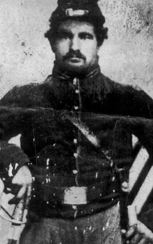

|

NAME: Louis Zemmeht
BORN: 1835
DIED: 1907
ALLEGIANCE: Union
HIGHEST RANK: Orderly
UNIT: 8th New York Cavalry, Company H
RECORD: Enlisted on November 14,1861. Injured in the
July 1-3, 1863, Battle of Gettysburg. Injured in a skirmish
near Culpeper, Virginia. Honorably discharged on December 8,
1864.
|
|
Frenchman Louis Zemmeht, an orderly for Major General Philip
Sheridan, was delivering orders one day in 1864 when he
happened upon an old man making applejack. He rounded up 10
men, a wagon, and several empty kegs, and stocked up.
The next morning, so the story goes, the bugle sounded in
camp, but no one responded. Sheridan naturally was
suspicious. He checked Zemmeht's tent and found the source
of the soldiers' tardiness. He summoned Zemmeht and ordered
him to destroy the kegs. Zemmeht did so, but saved one keg
and presented it to Sheridan as a peace offering. Sheridan
accepted it.
Zemmeht understood the value of doing favors for people. it
was something he may have learned from his father, the mayor
of Rensworg, France. Louis lived at home only until age 13,
however, when he was sent to Paris to prepare for the
priesthood. A year later, he wrote home that if he was not
allowed to quit school, he would run away to America. His
father gave in, and Louis promised to work hard as a farmer.
When Louis's favorite sister and then his father died, Louis
joined the French army. But military life was too strenuous
and he planned to desert to America. His mother paid off the
captain of a ship to stow Louis away inside a barrel. In the
United States, Zemmeht worked as a hired hand near Batavia,
New York, until November 1861, when he joined the 8th New
York Cavalry.
Plenty of stories about Zemmeht's war years have been handed
down through his family. In one, Zemmeht was captured but
his captor forgot to disarm him. When the time was right,
Zemmeht drew his sword and slew the man. During the Battle
of Gettysburg, Zemmeht rode up to a cannon to attack its
gunner and was blasted in the face with burning gunpowder.
He never saw properly from one eye again, but he did kill
his enemy target.
After the Rebels retreated from Pennsylvania, Zemmeht fought
in a skirmish near Culpeper, Virginia. There, a piece of
shell hit him in the side, breaking two ribs and landing him
in a hospital in Washington, D.C. The injury eventually led
to his discharge from the army.
Returning to Batavia, he worked as a farmer for a few years.
He then moved to Great Bend, Kansas, where he died in April
1907.
Source: Civil War Times Illustrated
38:3 (June 1999), 80.
|